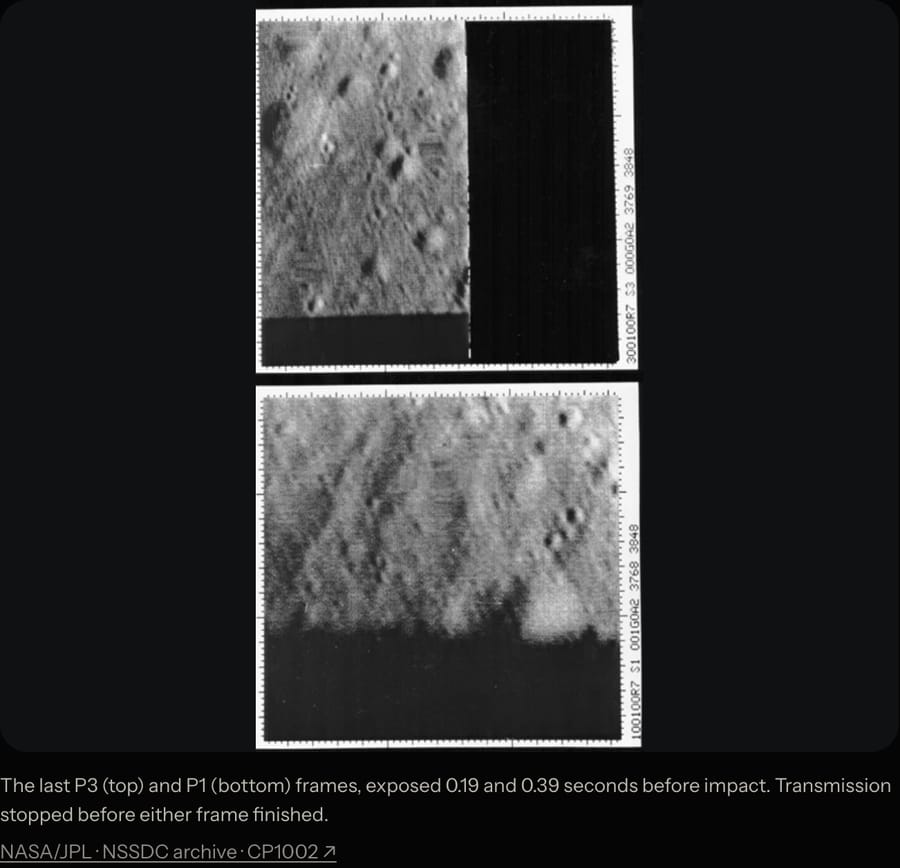
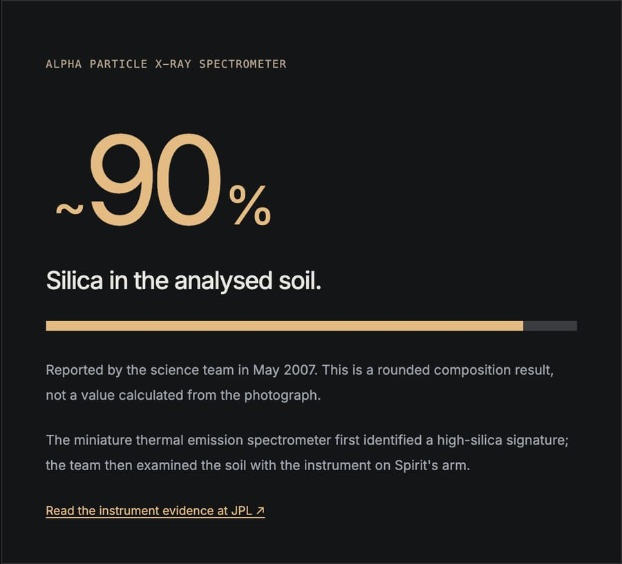
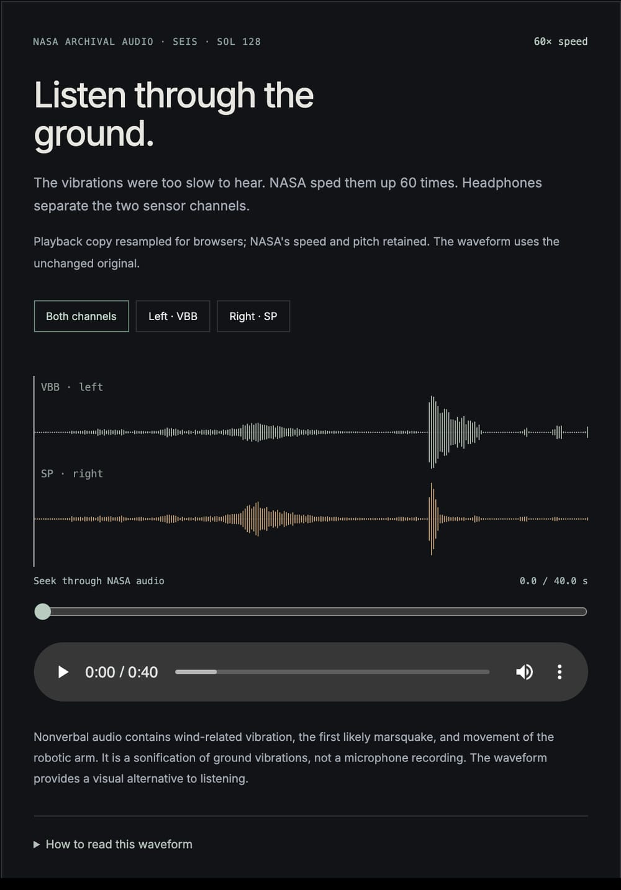
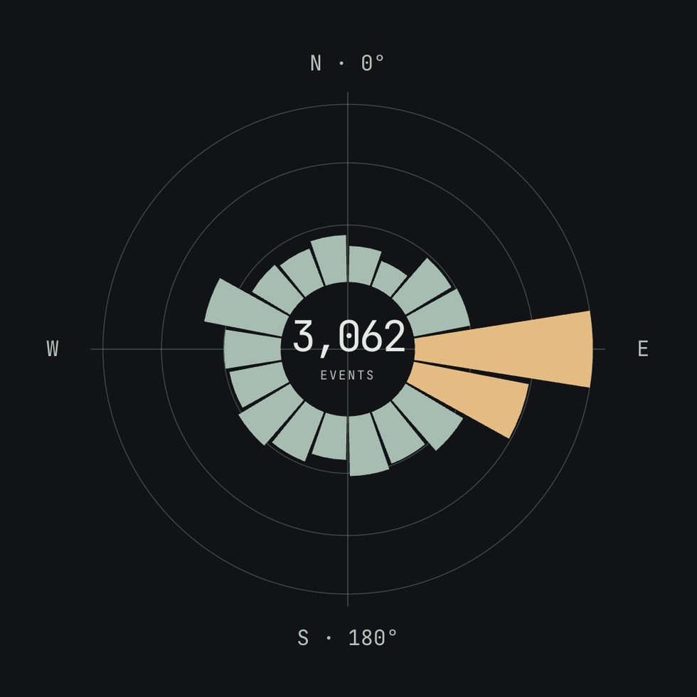
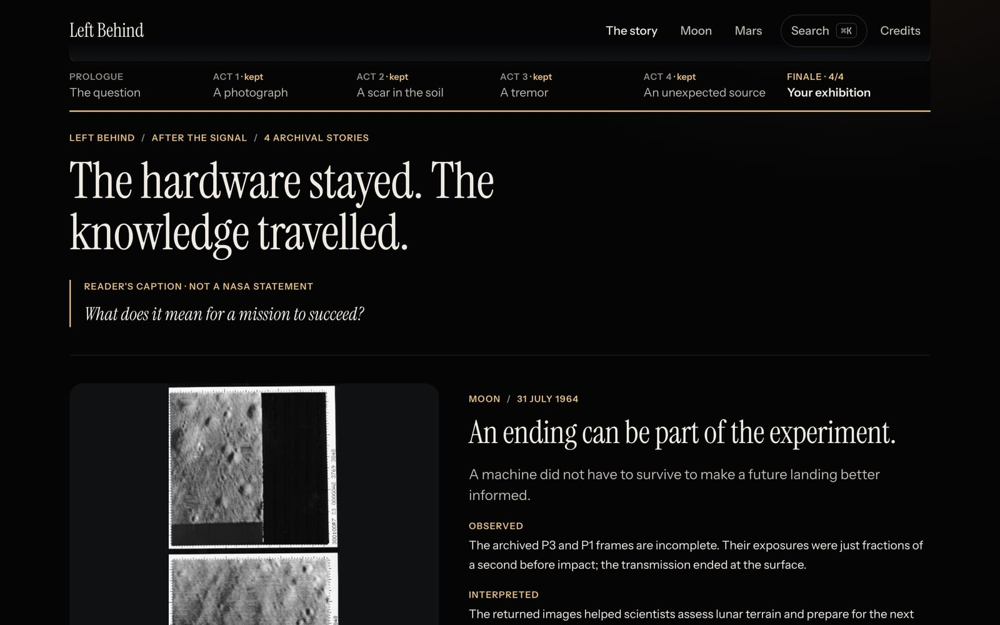
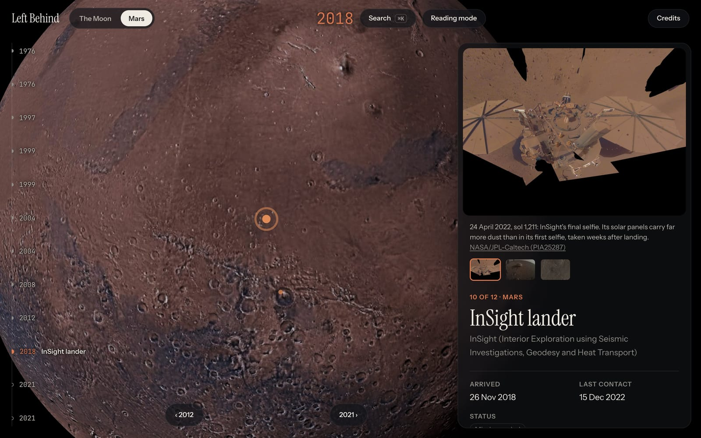

NASA Space Apps 2026 · Guelph
They went silent. Their evidence didn't. An interactive documentary about the NASA hardware left on the Moon and Mars, and what it is still teaching us.
The challenge
NASA asked for a story-driven tool that shows school-age and casual space fans what was left behind, why it was sent and what it discovered.
Our answer: follow the evidence after the signal stops
The visitor experience

Switch between Ranger 7's first view and its last frames, exposed under half a second before impact.

Compare what the camera saw with what the spectrometer actually measured.

Play and scrub NASA's Sol 128 sonification, which holds the first likely marsquake. The waveform is drawn from the original audio.

Filter 3,250 cataloged seismic events and see how many point back toward the lander.
NASA data is the story, not decoration
Apollo 17's seismic experiment kept recording after the astronauts left. Researchers re-read those NASA records in 2023. Visitors filter the published catalog by month, direction and quality, then inspect each event's four-sensor arrival times.
The unchanged CC0 catalog (Civilini, Husker and Weber, CaltechDATA) is bundled and checked by automated tests. The tool reproduces published results. It never invents new source locations, and every view can be shared or downloaded as an evidence receipt.
Curated by you
Every story keeps these three apart. Visitors pick the stories to keep, add a title and a question for the next reader, then share a link, print a PDF or download source notes.
No account and no server. One tap saves the whole evidence room for offline classroom use, and every file is integrity-checked before it is saved.


The atlas behind the evidence
NASA and partner open data used
What comes next
A classroom kit. A 45-minute teacher guide and worksheet is already live at /classroom/, fitted to Ontario Grade 6 and Grade 9 science. Next step: try it with students in Guelph.
More machines. Apollo 12, 14 and 16, GRAIL and LADEE, using the same source-checked format.
Visitor-made exhibitions. Students curate and share their own evidence stories, with the limits kept attached.
↓ / → next slide · ↑ / ← previous